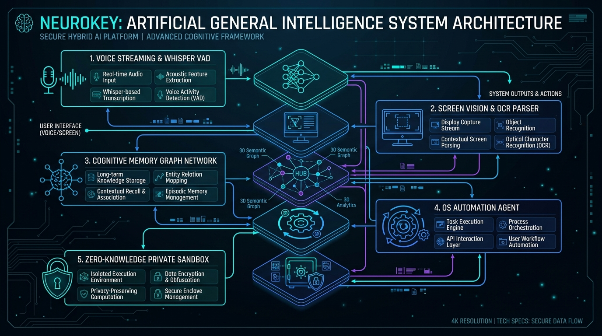

Sizning shaxsiy sun'iy intellektingiz — sizga yaqinroq
NeuroKey — eshitadi, ko'radi, eslaydi va harakat qiladi. Tabiiy ovoz orqali kompyuteringizni boshqaradi, ekrandagi kontekstni ko'radi, doimiy kognitiv xotiraga ega va faqat SIZ uchun ishlaydi.
NeuroKey Pitch Deck (O'zbekcha va Inglizcha)
Hakamlar hay'ati, investorlar va mehmonlar uchun NeuroKey loyihasining to'liq 12 sahifali rasmiy taqdimoti. Muammo, yechim, 50 kognitiv modul, arxitektura, bozor tahlili (TAM $21.1B) va $50,000 pre-seed rejalari bilan tanishing:
NeuroKey Pitch Deck (O'zbekcha)
Pitch Day 3.0 uchun tayyorlangan rasmiy to'liq taqdimot. Muammo-yechim, xotira grafigi, ekranni ko'rish, 5 ta B2C tarif ($21–$84), B2B reja va moliyaviy hisob-kitoblar.
NeuroKey Pitch Deck (English)
Official English presentation for global partners and judges. Covers cognitive architecture, On-Device privacy, TAM $21.1B / SOM $415K, founders' background, and $50K pre-seed roadmap.
Muammo → Yechim: AI ko'p, lekin sizni taniydigani yo'q
Bozorda mavjud sun'iy intellekt vositalari chat oynasidan nariga o'tmaydi. NeuroKey ushbu to'rtta asosiy tizimli to'siqni to'liq bartaraf etadi:
Har safar noldan boshlash
Suhbat tugashi bilan AI sizni unutadi. Odatlaringiz, ishingiz, loyihalaringiz va shaxsiy afzalliklaringiz saqlanmaydi.
Faqat gapiradi, lekin amalda qilmaydi
Ko'pchilik yordamchilar faqat matn yozadi. Kompyuteringizni boshqarmaydi, fayllar bilan ishlamaydi va ekrandagi holatni ko'rmaydi.
O'zbek va rus tilida zaif
Mahalliy nutq madaniyati, sleng va aralash tildagi gaplar ko'pincha noto'g'ri tushuniladi yoki sekin javob qaytariladi.
Suhbat begona serverda saqlanadi
Shaxsiy va korporativ maxfiy gaplaringiz xorijiy kompaniyalar serverlariga ketadi. Ko'pchilik buni mutlaqo xavfsiz deb hisoblamaydi.
Doimiy Kognitiv Xotira (Memory Graph)
NeuroKey sizning har bir suhbatingiz, ishingiz va afzalliklaringizni uzluksiz assotsiativ bilimlar grafigi ko'rinishida doimiy eslab qoladi.
Ekranni Ko'radi va Kompyuterni Boshqaradi
Ekraningizda nima ochiqligini (kod, Excel, brauzer) tushunadi. Telefondan buyruq berganingizda ham ofisdagi kompyuteringizda ishlarni avtonom bajaradi.
Tabiiy Mahalliy Ovoz (100+ Til)
O'zbek, rus, ingliz va 100+ tilda tabiiy, insoniy ovoz bilan real vaqtda muloqot qiladi. Til avtomatik aniqlanadi, kechikish <800 ms.
Zero-Knowledge va Lokal Maxfiylik
O'z kompyuteringizdagi tarifda ma'lumot qurilmadan tashqariga chiqmaydi ($0 server xarajati). Server tarifida esa faqat sizga tegishli shifrlangan xona quriladi.
Eshitadi
Tabiiy ovoz orqali muloqot. O'zbek, rus, ingliz va 100+ tillar, intonatsiya va kontekstni darhol ilg'ash.
Ko'radi
Ekranni real vaqtda tushunish. Qaysi oynada qanday ish qilayotganingizni ko'rib, ayni vaziyatga mos yordam berish.
Eslaydi
Doimiy xotira grafigi. Oylik uchrashuvlar, qarorlar, mijoz ma'lumotlari va afzalliklaringiz abadiy saqlanadi.
Harakat Qiladi
Kompyuter va ilovalarni avtonom boshqarish. Telefondan Telegram orqali bog'lanib, kompyuterda fayllarni yuborish.
Jamoa: Asoschilar, Rollar va Texnologik Ko'nikmalar
NeuroKey jamoasi — tizimni noldan ishlab chiqqan va kognitiv arxitekturani amalda sinab ko'rgan iqtidorli muhandislardan iborat.

Diyorbek Sobirjonov
Founder & CEO · Core AI ArchitectButun tizimni yaratgan: 50 kognitiv modul, ovozli boshqaruv, kognitiv xotira grafigi va telefon ko'prigi muallifi. FoundersCamp bitiruvchisi. On-device LLM va avtonom agentlar bo'yicha ekspert.

Elbek Azimjonov
Co-founder · 5+ yillik muhandislik tajribasiDasturiy injiniringda 5+ yillik tajriba. Mahsulot arxitekturasi, biznes integratsiyalar, B2B pilot sinovlari va Go-To-Market strategiyasi bo'yicha mas'ul.
Ikki asoschi va o'sishga qarab kengayish
Hozir: 2 asoschi + 1 dasturchi (maosh hisobi: 3 kishi, oyiga $1,456). Daromad o'sgach: +1 dasturchi. Keyin: support va marketing.
Nima uchun jamoangiz bu muammoni hal qila oladi?
Biz bu masalaga qog'ozdagi nazariya sifatida emas, balki chuqur amaliy tajriba, empirik sinovlar va mahalliy reallikni tushunish orqali yondashdik:
To'liq Mustaqil Ishchi Arxitektura
Biz shunchaki API chaqiruvchi interfeys emasmiz. Kompyuterni bevosita boshqaruvchi, ekranni ko'ruvchi va foydalanuvchiga moslashuvchi to'liq avtonom agentlik tizimini noldan muhandislik darajasida qurdik.
50 Kognitiv Modulning Empirik Tekshiruvi
Tizimdagi 50 ta alohida modulning har biri o'chirib-yoqilib (ablation test) tekshirilgan. 47 ta modul o'lchanadigan aniq ijobiy hissa berishi ilmiy asoslangan.
8 GB RAM Noutbukda Ishlaydigan Optimallashtirish
Har qanday foydalanuvchining oddiy kompyuterida ishlay olishi uchun mahalliy inference, kvantlash (4-bit) va kesh xotira mexanizmlari eng yuqori darajada tejamkor qilingan.
Mahalliy Til va Madaniyat Nozikliklari
O'zbek tilining so'zlashuv uslubi, rus va o'zbek tillarining aralash qo'llanilishi va mahalliy korxonalarning ish tartibini xorijiy modellardan ko'ra ancha teran tushunamiz.
FoundersCamp Ekotizimi va Yuridik Tayyorgarlik
Asoschimiz FoundersCamp sertifikatlangan dasturini tamomlagan. IT Park rezidentligi, mahalliy to'lov tizimlari (Click/Payme) va korporativ shartnomalar yuzasidan aniq reja mavjud.
Zero-Cloud / Mutlaq Maxfiylik Arxitekturasi
Tijorat sirlari va shaxsiy ma'lumotlarni begona bulutlarga chiqarmasdan, foydalanuvchi ixtiyoridagi lokal "qafas"da saqlash muhandisligini to'liq o'zlashtirganmiz.
Yo'l Xaritasi: Idea → Prototype → MVP → Launched
Bizning bosqichlarimiz qayerdan boshlangani va qayerga qarab borayotgani bo'yicha aniq muddatlar va o'lchanadigan natijalar:
1. Idea (G'oya)
- Shaxsiy kognitiv AI konsepsiyasi shakllantirildi
- Arxitektura chizmalari va xotira grafigi nazariyasi
- Ovozli muloqot kechikishini kamaytirish tadqiqoti
- Bozor tahlili: ChatGPT va Siri kamchiliklari aniqlandi
2. Prototype (Prototip)
- 50 kognitiv modul ishlab chiqildi va integratsiya qilindi
- Ovoz, ekran ko'rish va OS avtonom boshqaruv prototipi yaratildi
- Telegram masofaviy boshqaruv ko'prigi muvaffaqiyatli sinovdan o'tdi
- Saytda interaktiv sinov simulyatori va demo sahifasi ishga tushirildi
3. MVP (Bozorga Kirish)
- MChJ ochish va IT Park rezidentligini olish
- Click va Payme to'lov tizimlarini to'liq integratsiya qilish
- O'z kompyuteridagi tariflar (Start $21 / Pro $42) bilan yopiq beta
- Dastlabki 100 foydalanuvchida narx va tariflarni sinash
- 2 ta B2B korxona bilan bepul sinov (pilot) o'tkazish
4. Launched & Scale
- 4–8 oy: Ochiq ishga tushirish, yuk testi va Max/Ultra tariflari
- 9–12 oy: ~90–100 to'lovchi (zararsizlik / break-even nuqtasi)
- 1 000 to'lovchiga chiqish ($34.6K oylik tushum, 43% sof foyda)
- Jamoani kengaytirish va mintaqaviy bozorga chiqish
Yechimni Qanday Amalga Oshiramiz? (Texnologik Arxitektura)
NeuroKey bir-biri bilan uzviy bog'langan 5 kognitiv qatlamdan iborat to'liq integratsiyalashgan sun'iy intellekt platformasidir:

Haqiqiy vaqtli audio oqimini qabul qilish, shovqinni filtrlash, nutq faolligini aniqlash (VAD) va mahalliy tilda bir zumda matnga hamda nutqqa (TTS) aylantirish.
Foydalanuvchi kompyuter ekranidagi faol darchalar, dastur elementlari, xatolar va jadvallarni skanerlab, chuqur kontekstual anglash.
Vektorli xotira va semantik bilim grafigi (Knowledge Graph). Barcha suhbatlar, odatlar va shaxsiy kelishuvlar assotsiativ bog'lanadi.
Operatsion tizimni boshqarish: sichqoncha, klaviatura buyruqlari, ilovalarni ishga tushirish, fayllarni yaratish va jo'natish avtomatizatsiyasi.
Lokal qurilmada izolyatsiya qilingan hisoblash muhiti. Serverda esa faqat foydalanuvchiga tegishli shifrlangan shaxsiy xona.
Telefonda Qanday Ishlaydi & Kompyuterga Qanday Ulanadi?
NeuroKey — faqat kompyuter ekrani emas. Telefoningiz orqali kompyuteringizni masofadan to'liq boshqarasiz. Barcha aloqa lokal Wi-Fi orqali ultra-past kechikishda (<5ms) kechadi.
TLS 1.3 · Shaxsiy P2P Tunnel
🎬 Videoda Ishlash Jarayoni:
🔗 Kompyuterga Qanday Ulanadi? (3 ta oddiy qadam)
1. PC'da NeuroKey ishga tushadi
Kompyuterda lokal xizmat ochiladi va xavfsiz bir martalik QR-kod yoki PIN generatsiya qilinadi.
2. Telefondan bitta bosish
Lokal Wi-Fi orqali avtomatik topadi yoki telefon kamerasida QR-kodni skanerlaysiz.
3. 1 soniyada to'liq sinxron
Internet o'chganda ham ishlaydi. 100% lokal shifrlash, drayversiz va kabel talab qilinmaydi (<5ms ping).
📱 Telefonda Qanday Boshqariladi?
Ovozli Kognitiv Boshqaruv
Telefonga gapiring — kompyuterda ilovalar ochiladi, matn yoziladi va vazifalar bajariladi.
Smart Touchpad & Sichqoncha
Telefon ekrani sezgir noutbuk trekpadiga aylanadi (surish, 2 barmoq bilan skroll, bosish).
1-Bosishda AI Makroslar
Ekrandagi xatoni tahlil qilish, hisobotni PDF qilib yuborish yoki darchalarni almashtirish.
Ovozsiz & Sokin Ishlash
Saytda hech qanday ortiqcha shovqinsiz jim turadi, istalgan vaziyatda noqulayliksiz boshqarasiz.
NeuroKey Demo (Rus tilida, inglizcha subtitrlar bilan)
NeuroKey ovozli muloqot, ekran ko'rishi, 16 000+ kognitiv xotira tugunlari va kompyuterni avtonom boshqarishi real vaqtda. Quyidagi videoni to'g'ridan-to'g'ri saytda tomosha qilishingiz mumkin:
Jamoa Izohi & MVP Yangilanishi:
Bu demo yozilganiga 1 oydan oshdi. Hozirda jamoamiz bilan telefon orqali kompyuterni boshqarish va to'liq lokalda ishlash bo'yicha katta yangilanish qildik, MVP darajasiga chiqmoqdamiz. Yangi demo-videoni yozishga ulgurmadik (lekin tizim allaqachon to'liq ishlamoqda va sinovga tayyor).
Savol-Javob Namunalari Bilan AI-Chatbot
Sayt mehmonlari va Pitch Day hakamlari uchun: Quyidagi savol namunalaridan birini bosing yoki o'z savolingizni yozing. NeuroKey sun'iy intellekti qanday javob berishi va kompyuterni qanday boshqarishini jonli sinab ko'ring:
API Kirish: Dasturchilar va B2B Integratsiya
O'z dasturingiz, mobil ilovangiz yoki korxona ichki CRM/ERP tizimiga NeuroKey kognitiv qatlamlarini to'g'ridan-to'g'ri REST va WebSocket API orqali ulang:
NeuroKey On-Device & Cloud API v1
Lokal va bulutli modellarimiz uchun yagona xavfsiz endpoint. Foydalanuvchi ma'lumotlari to'liq shifrlangan, so'rov kechikishi 800ms dan past.
import neurokey client = neurokey.Client(api_key="nk_live_2026_preseed_test_token") # Kompyuterni avtonom boshqarish va fayllar bilan ishlash result = client.agent.execute( command="Bugungi hisobotni och va PDF qilib Telegramga yubor", screen_vision=True, local_enclave=True ) print(f"Status: {result.status} | Kechikish: {result.latency_ms}ms") # >>> Status: completed | Kechikish: 780ms
Bozor Ko'lami va Aniq Mintaqaviy Boshlanish
NeuroKey — hisob-kitob qilingan real bozor sig'imi va o'lchanadigan unit-iqtisodiyot ustiga qurilgan:
Beshta pullik qatlam & $50,000 Pre-seed
Bitta akkaunt telefonda ham, kompyuterda ham ishlaydi. O'rtacha bitta to'lovchidan tushum: $34.57/oy.
Start
8 GB kompyuter va telefon. Bitta kichik model, xotira, ovoz. So'rov limiti yo'q.
Pro
Kuchliroq model foydalanuvchining o'z kompyuterida. So'rov limiti yo'q. Mutlaq maxfiylik.
Max
Eng kuchli model, kompyuter o'chiq bo'lsa ham ishlaydi. Oyiga 1 200 ta vazifa.
Ultra
Max ning hammasi, ko'proq hajm. Oyiga 3 000 ta vazifa. (Qo'ng'iroq markazi uchun emas).
Optimal yo'l
Istalgan tarif ustiga: muammoni aytasiz, NeuroKey ochiq oynadan yechim topadi.
Kompaniyangiz uchun alohida sozlangan yordamchi
«Xodimning shartnomasi qayerda?» Soniyada javob beradi.
Keys fayli, oldingi qaror va yozishmalarni bir gap bilan topadi.
Bemor tarixi va navbat jadvalini ovoz orqali boshqaradi.
Har bir o'quvchiga 24/7 shaxsiy AI-repetitor.
$50,000 jalb qilinmoqda · Pre-seed bosqichi
MVP'ni to'liq bozorga chiqarish, jamoa kengayishi, mobil ko'prikni barqarorlashtirish va dastlabki zararsizlik nuqtasiga (~90–100 to'lovchi) yetish uchun $50,000 investitsiya jalb qilinmoqda (14 oylik xarajatlar to'liq qoplanadi).
Shartlar, ulush va baholash investor bilan ochiq muzokaralar asosida individual muhokama qilinadi.
Kutish ro'yxatiga qo'shiling yoki biznesingiz uchun konsultatsiya oling
Bir necha daqiqa vaqt oladi. Ma'lumotlaringiz to'g'ridan-to'g'ri asoschilarimizga yetib boradi.